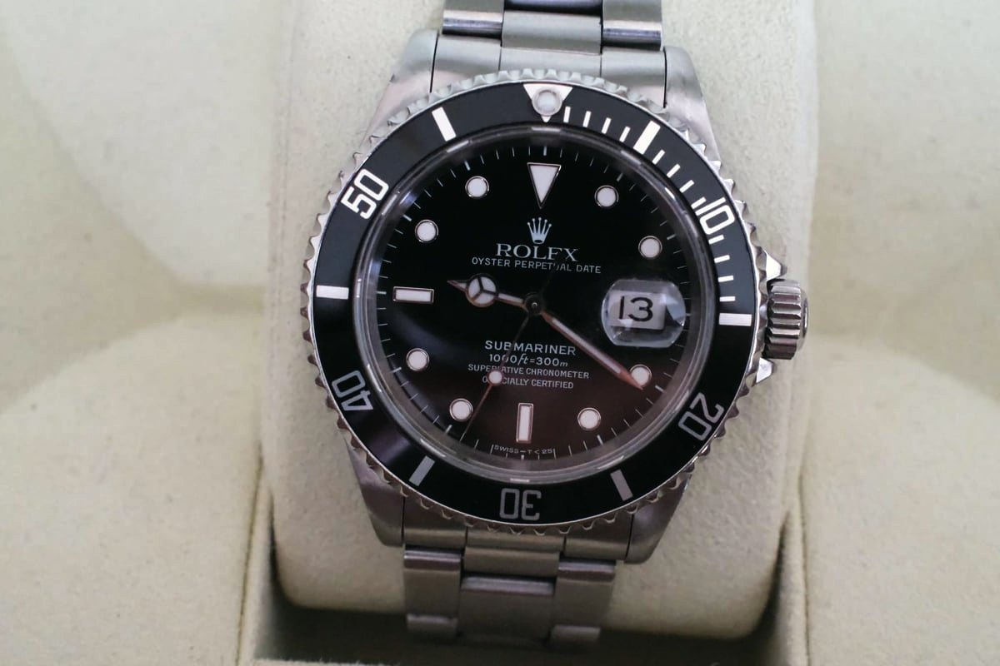
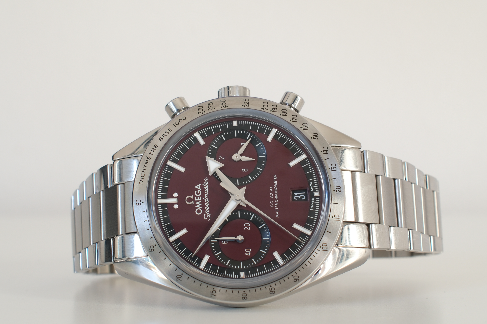
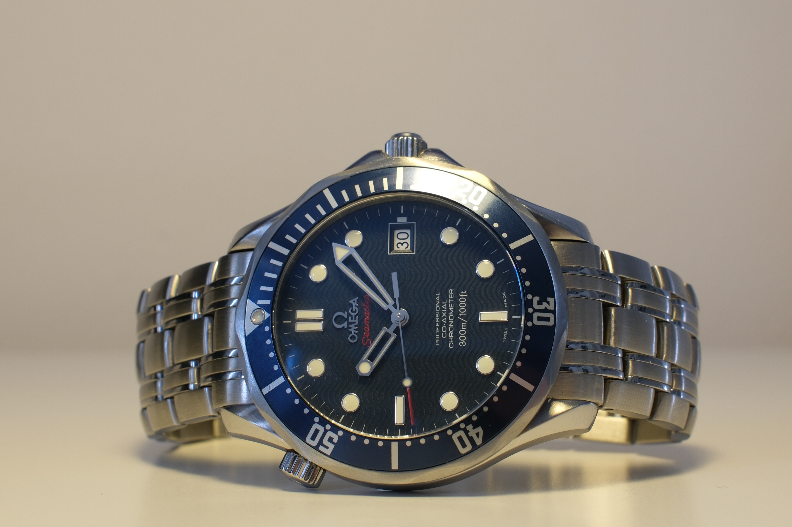
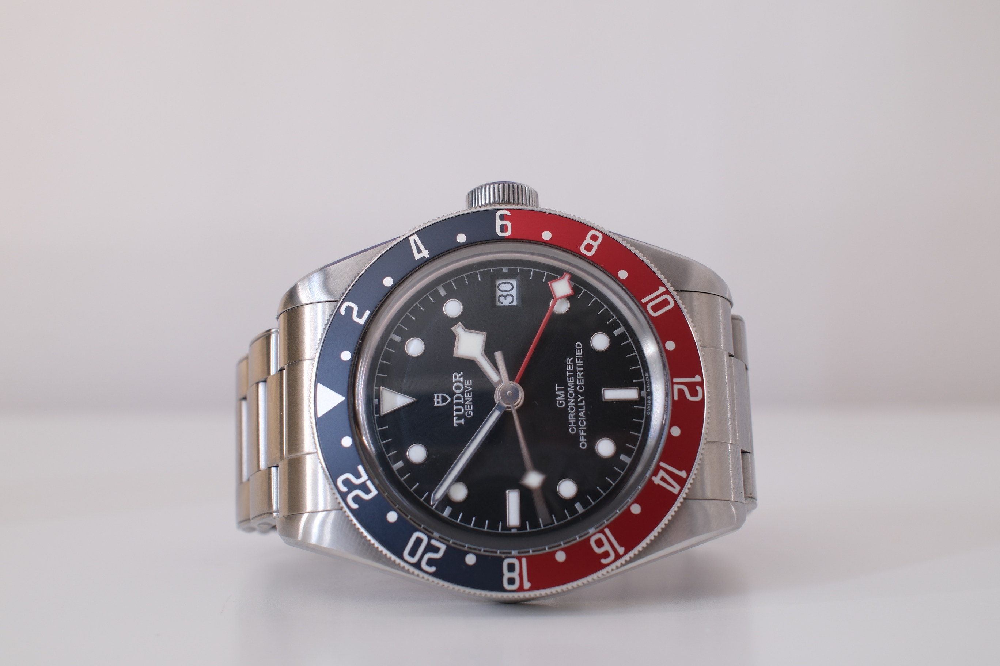

Find et lignende
Leder du efter et lignende?
Fortæl os hvad der betyder noget for dig — reference, årstal eller skive — så giver vi besked når vi finder et.
Mere fra All in Time
Du synes måske også om

Speedmaster '57 (Ubrugt)
DKK 49.900
En elegant og moderne fortolkning af den originale Speedmaster fra 1957, her med en karakteristisk bordeauxrød skive og klassisk stålkonstruktion. Modellen kombinerer Speedmasters historiske design med Omegas moderne Co-Axial Master Chronometer-værk, kronograf, datovisning og tachymeterskala. Et raffineret Speedmaster med et markant farvevalg og tydelige vintage-referencer.

Seamaster 300M Co-Axial "Casino Royale"
DKK 24.900
En ikonisk Omega Seamaster med blå bølgeskive, matchende dykkerkrans og Co-Axial automatikværk. Modellen er særligt kendt som “Casino Royale” Seamasteren, da den blev båret af Daniel Craig som James Bond i Casino Royale (2006). Med 300 meters vandtæthed og et tidløst sporty design er den en eftertragtet moderne Bond-klassiker.

Black Bay GMT "Pepsi"
DKK 20.900
En moderne Tudor-klassiker med den karakteristiske rød/blå “Pepsi” GMT-krans og sort skive. Uret kombinerer Black Bays vintageinspirerede design med en praktisk GMT-funktion, der gør det muligt at aflæse flere tidszoner. Med 41 mm stålkasse, automatisk Manufacture-værk og 200 meters vandtæthed er det et robust og alsidigt sportsur med tydelige referencer til Tudors historiske design.